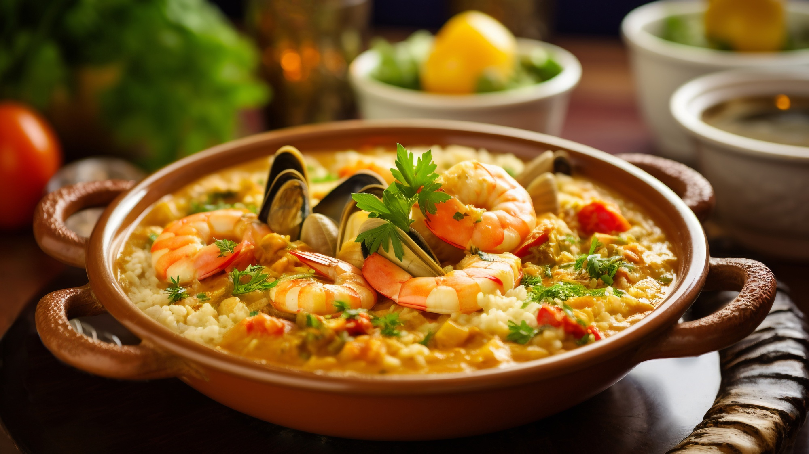

Home Page
Traditional Portuguese Dish: Arroz de Polvo

Description
Arroz de Polvo features tender pieces of octopus simmered in a rich, flavorful tomato-based broth, combined with
long-grain rice. The dish is often cooked to a malandrinho consistency—meaning the rice is slightly soupy or
saucy, but not watery, similar to a wet risotto.
The octopus is typically simmered until tender, sometimes pre-cooked and then added back to the dish. As the rice
cooks, it absorbs the deep umami flavors of the broth and seafood, resulting in a rich and satisfying dish.
Arroz de Polvo is typically served hot, often as a main course. It pairs well with a dry white Portuguese wine
like Vinho Verde or a chilled rosé.
Ingredients
- 1200g of octopus
- 1 diced onion
- 2 minced garlic cloves
- 2 bay leaves
- 100ml of olive oil
- 400g of rice
- Cilantro to taste
- 2 peeled tomatoes
- 1 glass of white wine
- Salt to taste
- Pepper to taste
Steps
- In a pot, cook the octopus without water over low heat for 50 minutes to 1 hour. The octopus will cook in
the water it releases naturally. Once cooked, cut it into small pieces.
- In a pot, make a sauté with the olive oil, onion, garlic, and bay leaves. Let it cook for a bit, then add
the tomatoes cut into small cubes. Let everything sauté together.
- Add the rice and let it fry a little. Then add the wine, the octopus cooking water, and about 0.5L of water.
Season with salt and pepper. Let it cook for 15 minutes.
- Add the octopus. Let it come to a boil, then add the chopped cilantro. Cover, turn off the heat, and let it
sit for two minutes before serving.